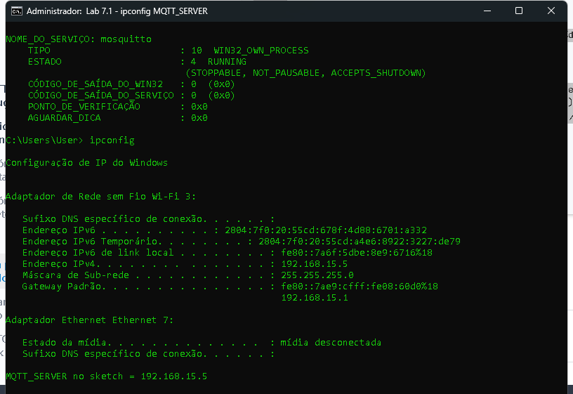
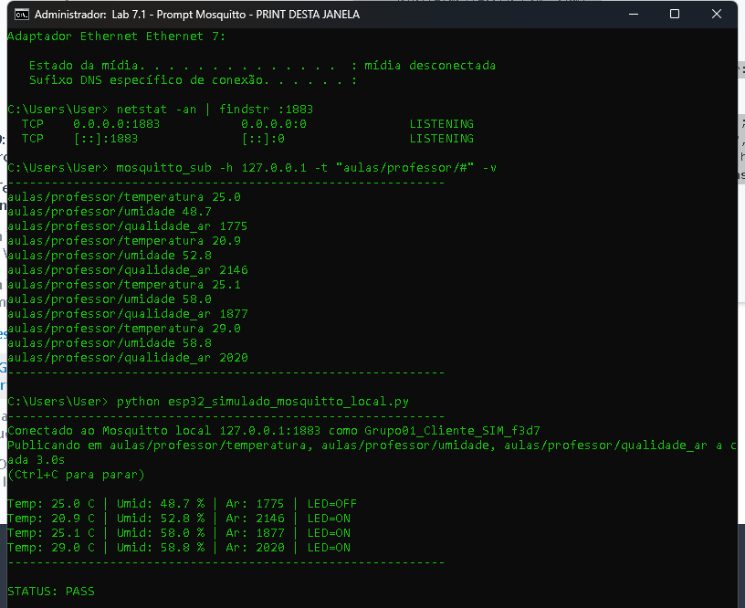

Aluno: Thales T | Data: 28/09/2026
STATUS: PASS
Sem ESP32/DHT11 fisicos em casa (repouso). O guia pede Mosquitto local + codigo Arduino. Validamos o broker local e a publicacao nos topicos do guia com cliente MQTT simulado no notebook. O .ino completo acompanha a entrega.
1883MQTT_SERVER): 192.168.15.5
aulas/professor/temperaturaaulas/professor/umidadeaulas/professor/qualidade_ar
Arquivo esp32_mosquitto_local.ino — MQTT_SERVER = 192.168.15.5; correcao airQuality → gas.
Arduino IDE: bibliotecas DHT + PubSubClient; placa ESP32 Dev Module; Wi-Fi da mesma rede do PC; Upload.